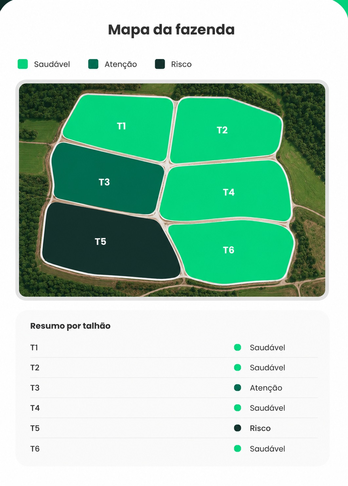
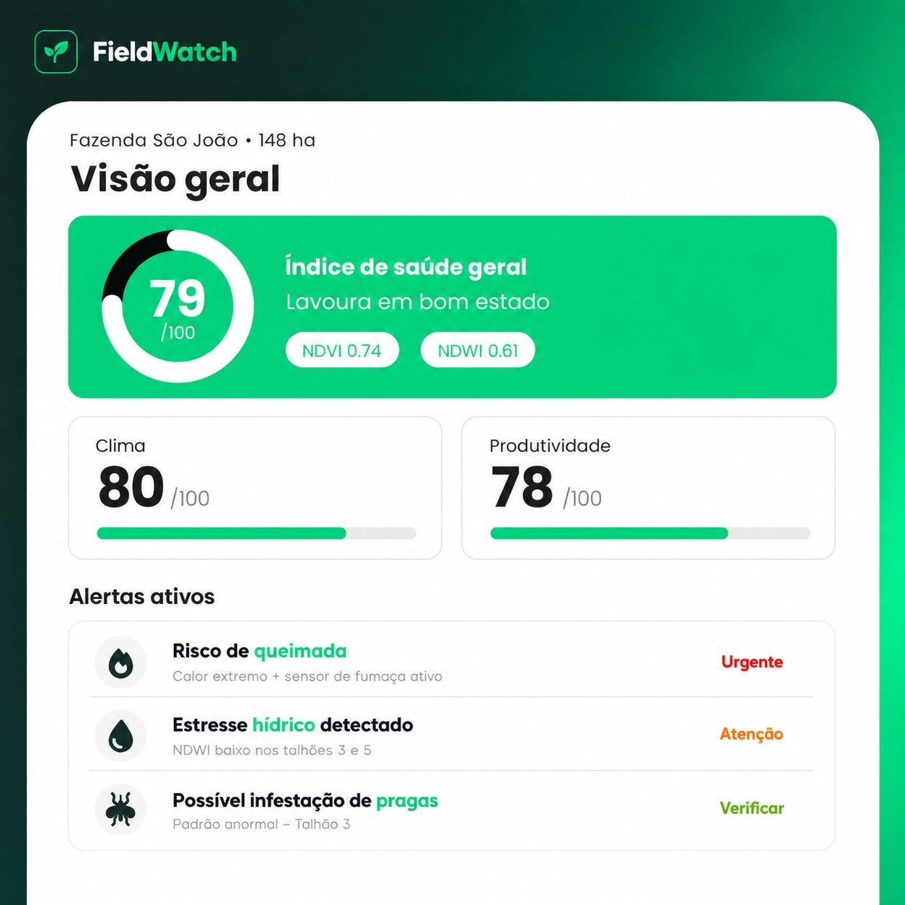
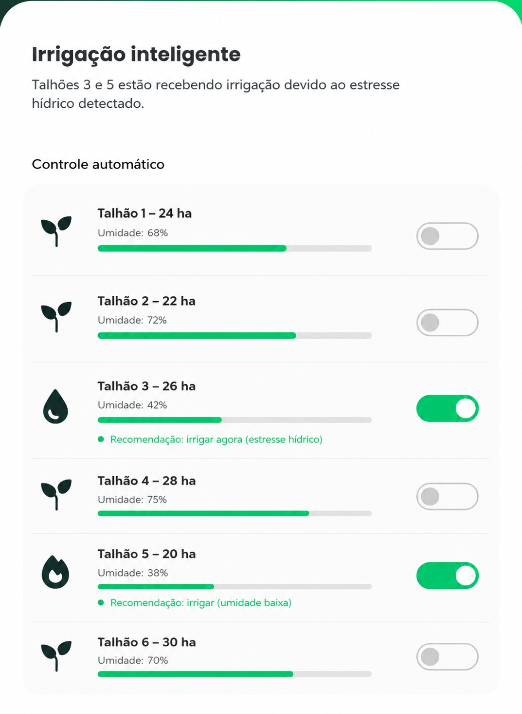

NDVI
Analisa a saúde da vegetação e identifica áreas com possível queda no desenvolvimento da lavoura.
Acompanhe a saúde da plantação, os indicadores agrícolas e os alertas críticos da propriedade em tempo real.
O painel da FieldWatch permite visualizar a situação geral da fazenda por meio de indicadores como saúde da lavoura, vegetação, umidade, clima e produtividade estimada.
Analisa a saúde da vegetação e identifica áreas com possível queda no desenvolvimento da lavoura.
Monitora a umidade da área agrícola e ajuda a identificar sinais de estresse hídrico.
Exibe riscos como seca, queimadas, pragas e áreas críticas que precisam de atenção imediata.
A propriedade é dividida em talhões, permitindo identificar quais áreas estão saudáveis, em atenção ou em risco. Assim, o produtor consegue agir de forma mais rápida e direcionada.


O dashboard apresenta um resumo dos principais indicadores da propriedade, permitindo acompanhar rapidamente a situação da lavoura e os alertas ativos.
Com base nos dados de umidade e estresse hídrico, a FieldWatch pode indicar quais talhões precisam de irrigação, ajudando o produtor a economizar água e evitar perdas.
